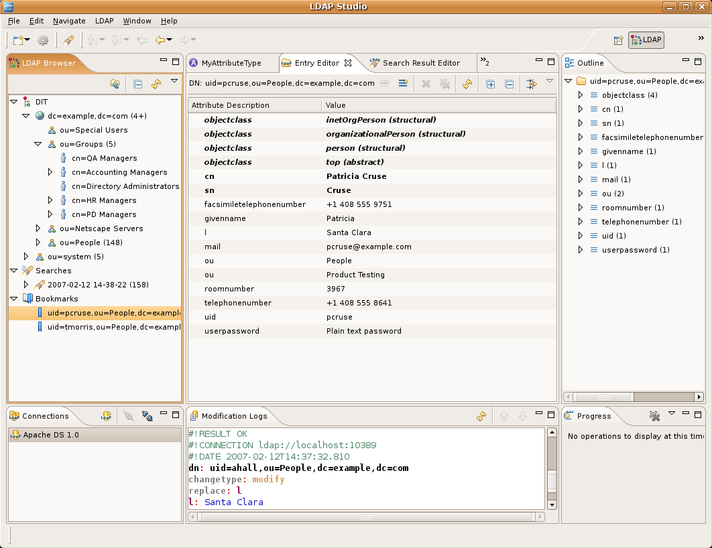
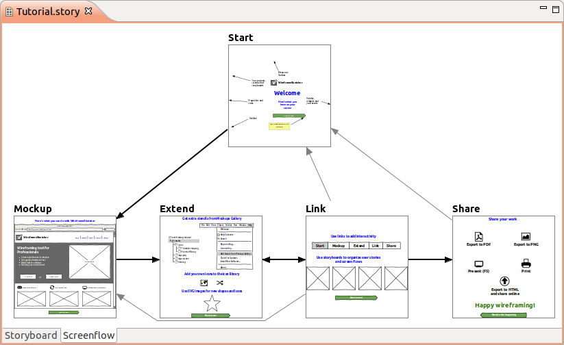
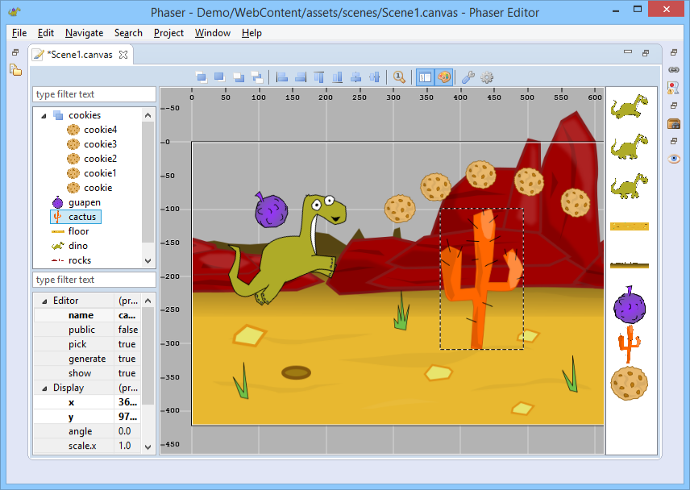

Qu'est-ce "Eclipse"?
Même si vous connaissez déjà la réponse à cause du titre, je voudrais vous convaincre avec quelques faits alternatifs.
Qu'est-ce que vous pensez?
Je vais évaluer les réponses.
Canada
La siège sociale est à Ottawa à coté d'un Tim Hortons. Difficile d'être plus canadien que ça.
Fondation
Selon la fondation d'Eclipse, Eclipse est une communauté pour:
les particuliers et les organisations
collaborer sur commercially-friendly open source software
Commermecially-friendly ça veux dire que les logiciels libre qui sont produit par cette communauté sont publié sous une license spécifique. La license
Eclipse Publice License
basé sur CommonPL
différence avec la GPL, les modules basé sur du code de EPL peuvent être relicencier même sur une licence propriétaire, donc la licene est incompatible avec le GPL et approuvé par OSI et libre sélon la définition de FSF
similaire de MPL, mais sans patent retaliation
Fondation
La fondation d'Eclipse fournis de service à cette communauté
IT Infrastructure
IP Management Development Process/Ecosystem
Les éléments standard pour produire des logiciels, mais on peut voir encore une focus les license
Légal
Il y a même un IPzilla .
Pour ça on a besoin de avocates en temp-plein. Qui paie les?
Fondation
Employée en temps plein payé par les membres
Ericsson AB
IBM
Oracle
Red Hat, Inc.
Robert Bosch GmbH
Google
...
Qui est exactement derrière cette fondation, ce n'est pas directement la communauté.
Encore une fois, concernant le Canada, je pense que la moitié de employé est franco-canadien.
Wikipedia
Eclipse is an integrated development environment (IDE)
Eclipse help
Eclipse is a platform that has been designed from the ground up for building integrated web and application development tooling .
Eclipse help
At the core of Eclipse is an architecture for dynamic discovery, loading, and running of plug-ins . The platform handles the logistics of finding and running the right code. The platform UI provides a standard user navigation model. Each plug-in can then focus on doing a small number of tasks well. What kinds of tasks? Defining, testing, animating, publishing, compiling, debugging, diagramming...the only limit is your imagination.
Structure
Workgroups
Projects
IDE et outils
Au niveau du code Eclipse est divisé en trois points mais la division n'est pas stricte.
Workgroups
Internet of Things
LocationTech
Long-Term Support
OpenMDM
Papyrus IC/Polarsys
Science
iot.eclipse.org is where you can learn about the technologies developed at Eclipse to make Internet of Things (IoT) development simpler.
LocationTech is the Eclipse Foundation's working group focusing on open source geospatial technologies.
The Eclipse Long Term Support (LTS) working group provides a set of services to Eclipse Foundation Members who need to support and maintain commercial products based on Eclipse projects.
The openMDM Working Group wants to foster and support an open and innovative eco-system providing tools and systems, qualification kits and adapters for standardized and vendor independent management of measurement data in accordance with the ASAM ODS standard.
The Papyrus Industry Consortium is organized under the Polarsys Working Group, and is intended to provide resources focused on enhancing the Papyrus projects for systems engineering. PolarSys is an Eclipse Working Group created by large industry players and by tools providers to collaborate on the creation and support of Open Source tools for the development of embedded systems.
The Science Working Group hosted by the Eclipse Foundation is a collaboration of people developing software components used for basic scientific research.
Projets
NeoScada
contrôleur industrielle standard
supervision
collection de données
rise v2g
communication de véhicule
vert.x
node.js on a jvm platform
http://vertx.io/
node.js/twisted mais plusieurs langues supportés
Vert.x devait initialement s'appeler Node.x,
AspectJ
langage aspect-oriented
aspect-oriented programming, c'est intéressant pour tous les amis de programmation fonctionnelle. la langage est excellent pour le cross-cuting concerns. comme logging ou authentification, qui sont difficile dans une langue sans side effects.
Projets/Java
egit
bibliothèque pour interagir avec le dépôt git
eclipselink
JPA implémentation
equinox
OSGi implémentation
swt
native widgets pour Java
rap
remote application platform
comme swt mais pour plusieurs platforms
jetty
webserver
souvent utilisé embedded, c'est un peu le sqlite de webserver
xtext
parser generator and AST generator
une interface pour le design de langages et de formats de fichier
tout le monde qui a déjà utilisé yacc, bison ou antlr va être content
Oomph
configuration automatisée
shareable (git/texte)
Eierlegende Wollmilchsau comme les orignaux
Si les technologies sont combinés on peut entre autres créer un éditeur. On va faire maintenant ça. On utilise l'éditeur pour configure l'éditeur après on utilise l'éditeur pour builder l'éditeur pour éditer les sources. Inception.
eclipse liferay - corpo
eclipse angular darkest dark - web hipster
eclipse debug remote c - hacker
Eclipse SDK distribution
php
python
rust
javascript
ruby
c/c++
...
Je pense que ici je ne raconte pas de nouvelle choses.
Apache Directory Studio (ldap)

wireframes (Wireframesketcher)

Phaser HTML5 2D video games

Vuze
BIRT
Talend
scientific interfaces (bio, chemistry)
SoapUI (rest, soap)
rssowl newsreader (RSS)
che
web-scale
docker run -v /var/run/docker.sock:/var/run/docker.sock -v /home/slangenmaier/che/:/data -e CHE_PORT=8888 eclipse/che start
Interfaces
web
remote
gui
cli
container
Size
visual studio - 1MB (~4GB)
vim - 5MB
sublime - 7MB
emacs - 60MB
eclipse - 70MB
atom - 80MB
intellij - 392MB
xcode - >4GB
Références
https://commons.wikimedia.org/wiki/File:Wollmilchsau.jpg
https://commons.wikimedia.org/wiki/File:Wading_moose.jpg
https://eclipse.org/org/foundation/directions.php
http://www.eclipse.org/membership/exploreMembership.php
http://www.eclipse.org/org/foundation/staff.php
https://eclipse.org/legal/
https://eclipse.org/org/documents/Eclipse_IP_Policy.pdf
https://www.eclipse.org/projects/handbook/#ip-iplog
IPzilla - https://dev.eclipse.org/ipzilla/
https://waynebeaton.wordpress.com/2017/01/16/eclipse-infrastructure-support-for-ip-due-due-diligence-type/
http://www.redmine.org/projects/redmine/wiki/HowTo_Mylyn
http://dbeaver.jkiss.org/
https://en.wikipedia.org/wiki/AspectJ
https://en.wikipedia.org/wiki/Remote_Application_Platform
https://en.wikipedia.org/wiki/Xtext